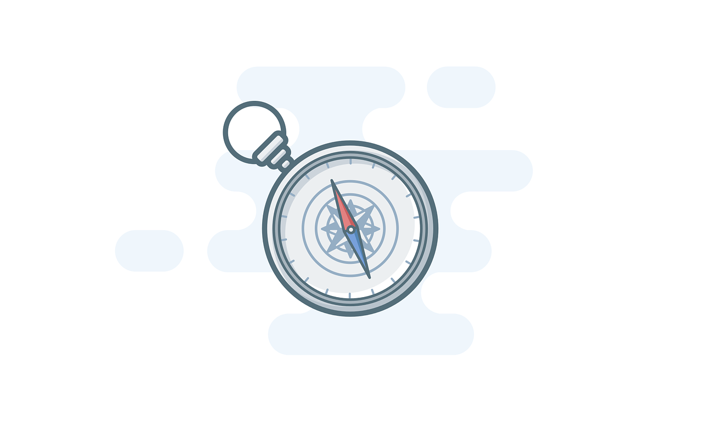

Fundamentos da Acessibilidade
Fundamental para garantir que produtos digitais sejam acessíveis a todos.
Fundamental para garantir que produtos digitais sejam acessíveis a todos.
O Transtorno do Espectro Autista (TEA) é uma condição do neurodesenvolvimento caracterizada por desafios na comunicação social, padrões de comportamento repetitivos e uma forma distinta de perceber e interagir com o mundo. O espectro é amplo, o que significa que as manifestações do autismo variam significativamente de uma pessoa para outra. Pessoas com TEA podem apresentar hipersensibilidade ou hipossensibilidade a estímulos sensoriais como luz, som, toque e movimento. Muitas vezes, preferem rotinas previsíveis, instruções claras e ambientes visuais limpos.

O design para Transtorno do Espectro Autista (TEA) busca criar ambientes,
produtos e experiências digitais que sejam compreensíveis, previsíveis e
confortáveis para indivíduos no espectro. Isso envolve a minimização de
estímulos sensoriais excessivos (como cores berrantes, luzes piscando ou
ruídos altos), o uso de uma linguagem visual e textual clara e literal
(evitando metáforas ou ambiguidades), e a promoção de layouts
organizados e intuitivos.
Além disso, é fundamental utilizar uma linguagem visual e textual clara, objetiva e literal,
evitando metáforas ou figuras de linguagem que possam gerar interpretações ambíguas.
A acessibilidade web é a prática de projetar e desenvolver websites e aplicativos digitais de forma que possam ser utilizados por todas as pessoas, independentemente de suas habilidades, limitações ou deficiências. Seu objetivo é garantir que todos tenham igualdade de acesso à informação, aos recursos e às funcionalidades disponíveis, removendo barreiras que possam impedir ou dificultar a interação com o conteúdo online.
Isso inclui criar interfaces e conteúdos que sejam acessíveis para indivíduos com deficiências visuais (como cegueira total, baixa visão ou daltonismo), auditivas (como surdez ou perda auditiva parcial), motoras (como dificuldade de utilizar o mouse ou teclado) e cognitivas (como dislexia, TDAH ou Transtorno do Espectro Autista).
O design cognitivo é uma abordagem que foca na criação de interfaces, produtos e experiências digitais alinhadas à forma como o cérebro humano processa informações, raciocina e toma decisões. Ele parte do entendimento de como as pessoas percebem, aprendem, memorizam, interpretam e resolvem problemas para desenvolver soluções mais intuitivas, claras e eficazes.
Ao incorporar princípios da psicologia cognitiva, o design cognitivo busca reduzir a sobrecarga mental do usuário, evitando elementos desnecessários, informações confusas ou excesso de estímulos que possam dificultar a compreensão. Isso envolve a aplicação de estratégias como organização lógica dos conteúdos, uso de hierarquias visuais, consistência na navegação, linguagem objetiva e feedbacks claros a cada interação.

Guias para desenvolvedores são documentos ou plataformas que reúnem boas práticas, padrões,
recomendações e exemplos que orientam o processo de criação de produtos digitais. Eles
funcionam como referência para garantir qualidade, consistência e eficiência no
desenvolvimento de sites, aplicativos e sistemas.
No contexto da acessibilidade e inclusão, esses guias são ainda mais importantes, pois
ajudam os desenvolvedores a considerar as necessidades de diferentes usuários, como pessoas
com deficiência ou no espectro autista. Ao seguir um guia bem estruturado, é possível evitar
erros comuns, aplicar soluções comprovadas e criar experiências digitais mais justas,
seguras e fáceis de usar para todos.
As ferramentas de acessibilidade são softwares e recursos que auxiliam no processo de criação, teste e melhoria da acessibilidade de produtos digitais. Elas podem variar desde auditores automáticos de código, que identificam problemas de conformidade com padrões como WCAG, até simuladores que ajudam designers e desenvolvedores a experienciar o site ou aplicativo sob a perspectiva de usuários com diferentes necessidades (por exemplo, simuladores de daltonismo ou leitores de tela). O uso dessas ferramentas é crucial para identificar barreiras e garantir que as soluções digitais sejam verdadeiramente inclusivas.